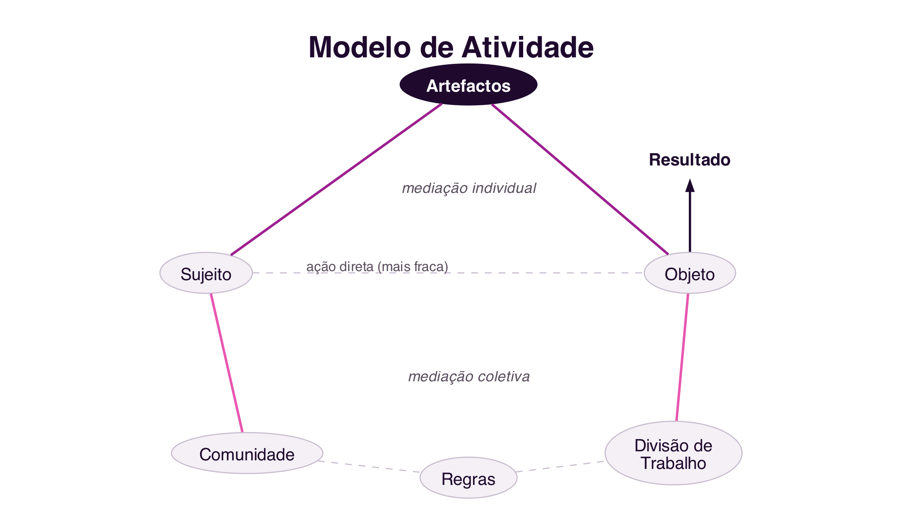
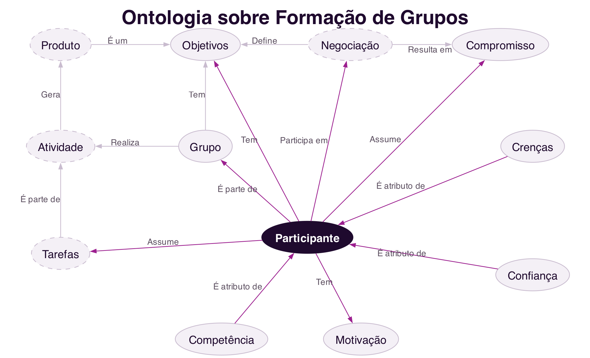
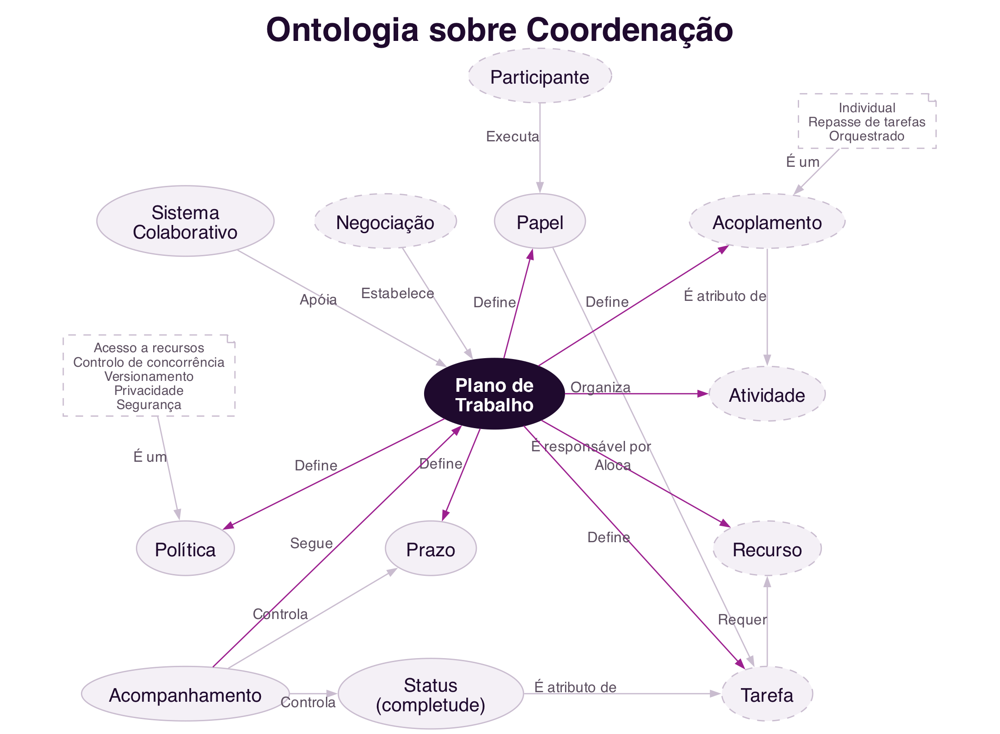
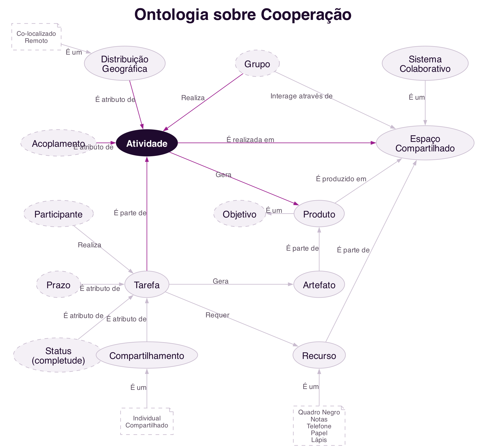
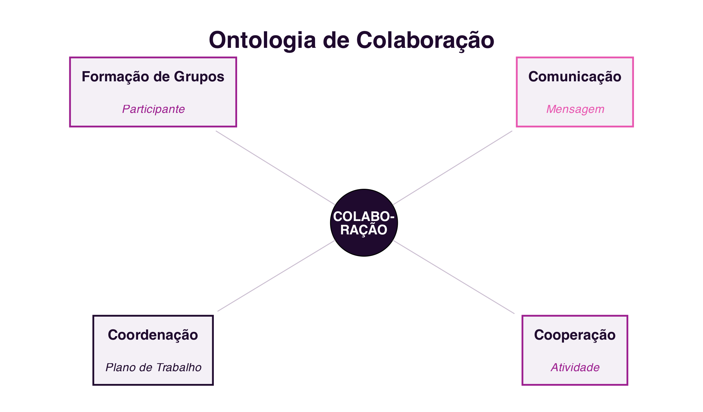

4 Teorias e Modelos de Colaboração
Teorias e Modelos de Colaboração
Introdução
Os três capítulos anteriores trataram das plataformas sociais: como a sociedade se organiza em rede, como essas redes se tornaram plataformas digitais, e como analisá-las através de métricas e de folksonomia. Este capítulo inicia um novo bloco, dedicado às plataformas colaborativas, cujo objeto de estudo já não é a rede social em si, mas o trabalho em grupo que ela pode suportar.
Antes de desenhar ou avaliar qualquer sistema colaborativo, é preciso perceber que a colaboração não é um fenómeno vago ou puramente intuitivo: pode ser modelada, isto é, descrita através de teorias e modelos formais que ajudam a compreender porque as pessoas colaboram, o que a colaboração exige, e onde tende a falhar. Este capítulo apresenta quatro desses modelos: a Teoria dos Jogos, a Teoria da Atividade, o Modelo 3C de Colaboração e uma ontologia de colaboração que integra os conceitos anteriores (Fuks et al. 2011; Vivacqua e Garcia 2011).
4.1 Porque Modelar a Colaboração?
Um modelo científico é uma representação abstrata, lógica ou matemática, de um fenómeno, construída para explicar, analisar e prever esse fenómeno de forma sistemática (Fuks et al. 2011). Uma das formas mais conhecidas de definir um modelo é através de uma fórmula matemática, mas também podem ser modelos gráficos, diagramas ou esquemas, como os que se seguem. Modelar a colaboração permite: em vez de decidir por intuição como apoiar o trabalho de um grupo, é possível analisar que tipo de trabalho está a ser feito, comparar situações diferentes com os mesmos conceitos, e escolher ou desenhar sistemas colaborativos com base nessa análise.
Os modelos apresentados neste capítulo respondem a perguntas diferentes, mas complementares:
- A Teoria dos Jogos explica porque é racional colaborar, ou não colaborar, quando o resultado de cada participante depende também das decisões dos outros.
- A Teoria da Atividade explica como um ser humano, individualmente ou em grupo, realiza uma atividade mediada por ferramentas, numa comunidade regida por regras.
- O Modelo 3C decompõe qualquer trabalho colaborativo em três dimensões, comunicação, coordenação e cooperação, que qualquer sistema de suporte à colaboração tem de contemplar.
- A Ontologia de Colaboração integra estes conceitos numa rede de termos comuns, útil para quem projeta sistemas colaborativos.
4.2 Teoria dos Jogos
A Teoria dos Jogos estuda cenários de tomada de decisão estratégica, em que o resultado final de cada participante depende não só da sua própria decisão, mas também das decisões dos restantes participantes. Cada jogador escolhe a sua estratégia depois de avaliar a situação dos adversários e de antecipar as estratégias que estes poderão adotar (Fuks et al. 2011). A teoria tem origem na matemática e na economia, e os seus primeiros estudos remontam ao século XVIII, mas foi sobretudo a partir da publicação de The Theory of Games and Economic Behavior, por John von Neumann e Oscar Morgenstern em 1944, e da noção de equilíbrio proposta por John Nash na década de 1950, que se consolidou como área autónoma.
Um conceito central para classificar estes cenários é a soma dos ganhos de todos os jogadores. Num jogo de soma nula (zero-sum game), o ganho de um jogador corresponde exatamente à perda dos restantes, a soma total mantém-se sempre igual a zero: é o caso de um jogo de xadrez, ou de uma partida de póker. Num jogo de soma não nula (non-zero-sum game), o resultado global pode variar consoante as decisões tomadas: é possível que todos os jogadores ganhem, ou percam, em conjunto. Como se vê a seguir, o Dilema dos Prisioneiros é um exemplo clássico de jogo de soma não nula.
4.2.1 O Dilema dos Prisioneiros
O exemplo mais conhecido da Teoria dos Jogos aplicado à colaboração é o Dilema dos Prisioneiros, formalizado pelo matemático Albert W. Tucker. Dois suspeitos são detidos pela polícia e interrogados em salas separadas, sem poderem comunicar entre si. Não há provas suficientes para os condenar por um crime maior, apenas por uma acusação menor, a menos que um deles confesse. A cada um é proposto o mesmo acordo:
- Se ambos ficarem em silêncio, cada um cumpre 6 meses de prisão.
- Se um confessar e o outro ficar em silêncio, quem confessa fica livre e quem se cala cumpre 10 anos.
- Se ambos confessarem, cada um cumpre 6 anos.

Estas quatro situações formam a matriz de ganhos do jogo (Figura 4.2). Analisada individualmente, a melhor estratégia para qualquer um dos suspeitos é confessar: se o cúmplice ficar em silêncio, confessar liberta-o de imediato; se o cúmplice também confessar, ainda assim confessar dá uma pena menor do que ficar calado sozinho. O paradoxo é que, se ambos raciocinarem desta forma individualmente racional, ambos confessam e cumprem 6 anos, um resultado pior para os dois do que se tivessem colaborado e ficado ambos em silêncio, cumprindo apenas 6 meses (Fuks et al. 2011).

O Dilema dos Prisioneiros mostra como a Teoria dos Jogos apoia a compreensão de situações reais de colaboração: esclarece conceitos como autointeresse, matriz de ganhos e jogos de soma não nula. Aplica-se a cenários tão diversos como a negociação entre empresas concorrentes, a gestão de um recurso partilhado por vários utilizadores, ou a decisão de contribuir, ou não, para um projeto coletivo.
4.2.2 Tit-for-Tat: a Evolução da Colaboração
Se, isoladamente, o Dilema dos Prisioneiros sugere que confessar, traindo o cúmplice, é sempre a estratégia racional, a situação muda quando o mesmo jogo se repete várias vezes entre os mesmos participantes. Na década de 1970, o cientista político Robert Axelrod organizou competições em que investigadores submetiam estratégias para versões repetidas do Dilema dos Prisioneiros, competindo umas contra as outras ao longo de muitas rondas. A estratégia vencedora, batizada tit-for-tat (“olho por olho”), foi proposta pelo matemático Anatol Rapoport e segue apenas três regras (Axelrod 1984):
- Contribui primeiro: nunca sejas o primeiro a trair.
- Se fores traído, retalia na ronda seguinte.
- Depois de retaliar, está disposto a perdoar e a voltar a colaborar.
Numa versão repetida do jogo, colaborar deixa de ser irracional: a expectativa de voltar a encontrar o mesmo adversário faz com que a traição tenha um custo futuro, a retaliação do outro jogador. O tit-for-tat mostrou-se, em repetidas simulações, mais eficaz a longo prazo do que estratégias puramente egoístas, e é usado até hoje como explicação de como a colaboração pode emergir e manter-se num cenário competitivo, sem qualquer autoridade central a impor cooperação (Axelrod 1984). A mesma lógica ajuda a entender fenómenos tão distintos como acordos comerciais informais entre empresas ou a reciprocidade observada no comportamento de vários animais sociais.
4.2.3 A Tragédia dos Comuns
Nem todos os jogos relacionados com colaboração opõem apenas dois jogadores. A Tragédia dos Comuns (tragedy of the commons), descrita pelo ecologista Garrett Hardin em 1968 (Hardin 1968), ilustra o que acontece quando vários participantes partilham um recurso comum e limitado.
Imagine-se um terreno de pastagem partilhado por vários pastores, cada um com o seu próprio rebanho. Para cada pastor, individualmente, acrescentar mais uma ovelha ao seu rebanho é sempre vantajoso: o lucro dessa ovelha extra é inteiramente seu, enquanto o custo do desgaste da pastagem é repartido por todos os pastores que a partilham. Como este raciocínio é válido para qualquer pastor, todos tendem a acrescentar o máximo de animais que conseguirem. Chegado a determinado ponto, porém, o número total de animais ultrapassa a capacidade da pastagem para se regenerar: o pasto deixa de crescer, deixa de alimentar qualquer animal, e todos os pastores saem a perder, incluindo aqueles que tinham sido mais comedidos.
A Tragédia dos Comuns mostra que, quando o ganho de uma decisão individual é privado mas o custo é partilhado por todo o grupo, a soma das decisões racionais de cada participante pode destruir o próprio recurso de que todos dependem. Por este motivo, a colaboração sustentável em torno de um recurso partilhado raramente sobrevive apenas com base na boa vontade: exige regras explícitas, aceites por todo o grupo, e mecanismos que penalizem quem as viole, desde a reprovação social até sanções formais, como multas ou a exclusão do grupo. É precisamente este papel das regras enquanto elemento da colaboração que a Teoria da Atividade, discutida de seguida, formaliza.
4.3 Teoria da Atividade
Enquanto a Teoria dos Jogos se concentra na decisão estratégica, a Teoria da Atividade explica como os seres humanos realizam atividades em situações do quotidiano, individualmente e em sociedade, sendo particularmente útil para compreender a colaboração mediada por tecnologia (Fuks et al. 2011).
Nesta teoria, a atividade é a unidade mínima de significado para compreender as ações de um sujeito, uma pessoa ou um grupo, que age sobre um objeto, algo concreto como um documento, ou abstrato como uma decisão a tomar, com o fim de alcançar um objetivo. Um conceito central da teoria é que essa ação nunca é direta: é sempre mediada por artefactos, ferramentas físicas, como um computador, ou cognitivas, como uma linguagem ou uma notação matemática. O artefacto atua sobre o objeto, mas também tem uma ação reversa sobre o próprio sujeito, molda a forma como este pensa e resolve problemas (Fuks et al. 2011).
Numa perspetiva coletiva, o sujeito não age isolado: está inserido numa comunidade. Essa dimensão coletiva acrescenta dois novos elementos de mediação: a divisão de trabalho, que organiza como o objeto é transformado em resultado entre os vários sujeitos da comunidade, e as regras, normas implícitas ou explícitas, convenções e relações sociais estabelecidas na comunidade. O modelo completo, adaptado de Yrjö Engeström (Engeström 1987), é representado na Figura 4.3.

Um exemplo aplicado à sala de aula ilustra o modelo: o sujeito é um estudante ou um grupo de estudantes; o objeto é o problema ou o trabalho a realizar; o artefacto é o sistema computacional, o computador, ou mesmo a linguagem usada para comunicar; a comunidade é a turma; a divisão de trabalho é a forma como as tarefas do trabalho de grupo são repartidas; e as regras são, por exemplo, os critérios de avaliação definidos pelo docente. Ao introduzir um novo artefacto, como uma plataforma colaborativa, muda-se a forma como a atividade é realizada, o que pode criar novos problemas mas também novas possibilidades, e é exatamente aqui que o desenho de sistemas colaborativos intervém.
4.4 Modelo 3C de Colaboração
O Modelo 3C de Colaboração analisa qualquer trabalho em grupo em três dimensões: comunicação, coordenação e cooperação. Tem origem numa classificação proposta por Ellis, Gibbs e Rein em 1991 para os sistemas de suporte ao trabalho em grupo (Ellis, Gibbs, e Rein 1991), mais tarde formalizada como modelo próprio:
- Comunicação: a troca de mensagens entre pessoas, através da qual se negoceia e se assumem compromissos.
- Coordenação: a gestão de pessoas, atividades e recursos, para que o trabalho de vários participantes se articule sem conflitos nem desperdício de esforço.
- Cooperação: a atuação conjunta no espaço de trabalho partilhado, para a produção efetiva de objetos ou informação.
Estas três dimensões não são independentes: inter-relacionam-se para que a colaboração aconteça (Figura 4.4). Ao comunicar, os participantes tomam decisões que exigem coordenação; ao coordenar, reorganizam tarefas que podem exigir nova comunicação; e a cooperação efetiva no espaço partilhado gera informação que realimenta tanto a coordenação como a comunicação.

A colaboração não é a única forma de organizar o trabalho em grupo. Um modelo alternativo, típico de organizações militares e da linha de montagem industrial clássica, é o de Comando e Controlo (C2): uma autoridade central decide o que deve ser feito e define previamente todas as tarefas, substituindo a coordenação distribuída pela supervisão direta, e eliminando praticamente a necessidade de comunicação e negociação entre quem executa o trabalho. Para que um trabalho em grupo seja verdadeiramente caracterizado como colaboração, e não apenas como execução coordenada de ordens, é preciso que ocorram, de facto, comunicação, coordenação e cooperação, tal como representado no Modelo 3C.
4.5 Ontologia de Colaboração
Os três modelos anteriores explicam aspetos distintos da colaboração, mas usam, por vezes, termos e níveis de detalhe diferentes. Uma ontologia é a descrição de um domínio, negociada por uma comunidade, para um determinado fim: cria uma base terminológica comum, o que facilita a comunicação entre quem trabalha na área e permite que sistemas computacionais produzam informação de forma inteligível sobre esse domínio (Vivacqua e Garcia 2011).
Partindo do mesmo modelo de Ellis e colaboradores usado no Modelo 3C (Ellis, Gibbs, e Rein 1991), a ontologia de colaboração organiza-se em quatro partes, cada uma com um conceito central (Vivacqua e Garcia 2011): a formação de grupos, a comunicação, a coordenação e a cooperação.
4.5.1 Formação de Grupos
O elemento central desta parte é o participante. Um participante assume tarefas, é parte de um grupo e participa nas negociações que definem os objetivos comuns; para tal, requer duas coisas essenciais: confiança, a crença partilhada de que se pode contar com os outros participantes, e motivação, sem a qual dificilmente se compromete com uma proposta. O grupo, por sua vez, realiza uma atividade que gera um produto, e esse produto é ele próprio um tipo de objetivo (Figura 4.5).

4.5.2 Comunicação
O elemento central é a mensagem. Um emissor codifica e envia uma mensagem, que segue um protocolo de comunicação partilhado com o recetor, e que o recetor recebe e interpreta; ambos partilham ainda um senso comum que torna a interpretação possível. A mensagem tem também três atributos que a condicionam: a forma (linguística, simbólica, corporal, entre outras), o meio de transmissão (desde o presencial ao sistema computacional) e o síncronismo (síncrona ou assíncrona). É através da mensagem que a negociação se realiza, e é dela que resultam os compromissos assumidos pelos participantes (Figura 4.6).

4.5.3 Coordenação
O elemento central é o plano de trabalho, apoiado pelo sistema colaborativo e estabelecido pela negociação. O plano de trabalho define os papéis de cada participante e o acoplamento entre atividades, define ainda políticas, prazos e a alocação de recursos, e organiza a atividade em tarefas concretas. O acompanhamento controla o cumprimento dos prazos e o estado de completude de cada tarefa, que por sua vez requer os recursos necessários à sua execução (Figura 4.7).

4.5.4 Cooperação
O elemento central é a atividade, realizada por um grupo com uma determinada distribuição geográfica (colocalizada ou remota) e um determinado acoplamento entre participantes. A atividade é realizada num espaço de trabalho partilhado, e gera um produto, composto por artefactos concretos. Essa produção decompõe-se em tarefas, que requerem recursos e que podem ser individuais ou partilhadas por vários participantes em simultâneo (Figura 4.8).

4.5.5 Síntese da Ontologia
A Figura 4.9 sintetiza estas quatro partes: a colaboração acontece quando participantes motivados se agrupam em torno de um objetivo comum, comunicam através de mensagens para negociar tarefas e assumir compromissos, coordenam o trabalho através de um plano que organiza essas tarefas, e cooperam, produzindo artefactos num espaço partilhado. Sem qualquer um destes quatro elementos, dificilmente há colaboração (Vivacqua e Garcia 2011).

Uma ontologia de colaboração é útil sobretudo para quem projeta sistemas colaborativos: ajuda a verificar que aspetos importantes do trabalho em grupo, como a confiança entre participantes ou a existência de um plano de trabalho explícito, não estão a ser esquecidos no desenho de um novo sistema.
4.6 Síntese
Este capítulo apresentou quatro modelos que fundamentam o estudo da colaboração:
- A Teoria dos Jogos distingue jogos de soma nula, em que o ganho de um implica a perda equivalente de outro, de jogos de soma não nula, em que o resultado global pode variar; o Dilema dos Prisioneiros é um exemplo do segundo tipo, e mostra que a decisão individualmente racional pode ser coletivamente pior do que colaborar (Fuks et al. 2011)
- Em versões repetidas do jogo, a estratégia tit-for-tat mostra como a colaboração pode emergir e manter-se sem autoridade central (Axelrod 1984)
- A Tragédia dos Comuns mostra que a soma de decisões individualmente racionais pode destruir um recurso partilhado, justificando a necessidade de regras e penalizações na colaboração (Hardin 1968)
- A Teoria da Atividade descreve como um sujeito age sobre um objeto, sempre mediado por artefactos e, na dimensão coletiva, também pela divisão de trabalho e pelas regras da comunidade (Engeström 1987)
- O Modelo 3C decompõe a colaboração em comunicação, coordenação e cooperação, distinguindo-a do modelo de Comando e Controlo (Ellis, Gibbs, e Rein 1991)
- A Ontologia de Colaboração integra estes conceitos, atribuindo um elemento central a cada uma das quatro partes: participante, mensagem, plano de trabalho e atividade (Vivacqua e Garcia 2011)
4.7 Para Refletir
Pensa num trabalho de grupo em que participaste recentemente: consegues identificar, nesse trabalho, os três Cs, comunicação, coordenação e cooperação? Havia algum deles claramente mais fraco do que os outros, e que problemas concretos é que isso causou?
E quanto ao tit-for-tat: consegues pensar nalguma relação, de trabalho, de amizade ou entre organizações, em que a colaboração se mantém precisamente porque se espera voltar a interagir com a outra parte no futuro? Consegues também pensar num exemplo de Tragédia dos Comuns que tenhas observado, e que regras ou penalizações, formais ou informais, existem, ou deveriam existir, para o evitar?